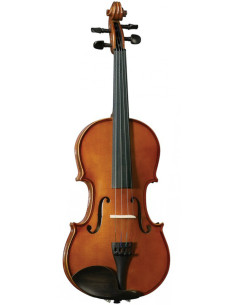
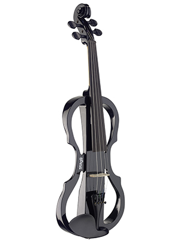

Violines
Los violines varían en diseño y sonido, adaptándose a diferentes estilos musicales y necesidades. Aquí hay un resumen de los tipos más comunes:
- Violín clásico
- Violín barroco
- Violín moderno
- Violín eléctrico
- Violín de estudio
Violines clásicos

Violines eléctricos
